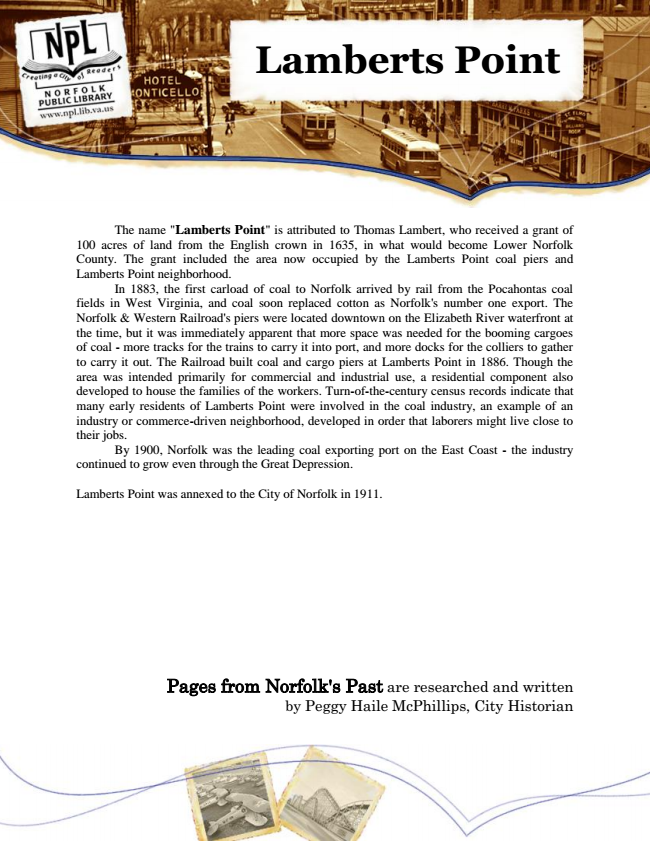

Lamberts Point
The name "Lamberts Point" is attributed to Thomas Lambert, who received a grant of 100 acres of land from the English crown in 1635, in what would become Lower Norfolk County. The grant included the area now occupied by the Lamberts Point coal piers and Lamberts Point neighborhood.
In 1883, the first carload of coal to Norfolk arrived by rail from the Pocahontas coal fields in West Virginia, and coal soon replaced cotton as Norfolk's number one export. The Norfolk & Western Railroad's piers were located downtown on the Elizabeth River waterfront at the time, but it was immediately apparent that more space was needed for the booming cargoes of coal - more tracks for the trains to carry it into port, and more docks for the colliers to gather to carry it out. The Railroad built coal and cargo piers at Lamberts Point in 1886. Though the area was intended primarily for commercial and industrial use, a residential component also developed to house the families of the workers. Turn-of-the-century census records indicate that many early residents of Lamberts Point were involved in the coal industry, an example of an industry or commerce-driven neighborhood, developed in order that laborers might live close to their jobs.
By 1900, Norfolk was the leading coal exporting port on the East Coast - the industry continued to grow even through the Great Depression.
Lamberts Point was annexed to the City of Norfolk in 1911.
Pages from Norfolk's Past are researched and written by Peggy Haile McPhillips, City Historian